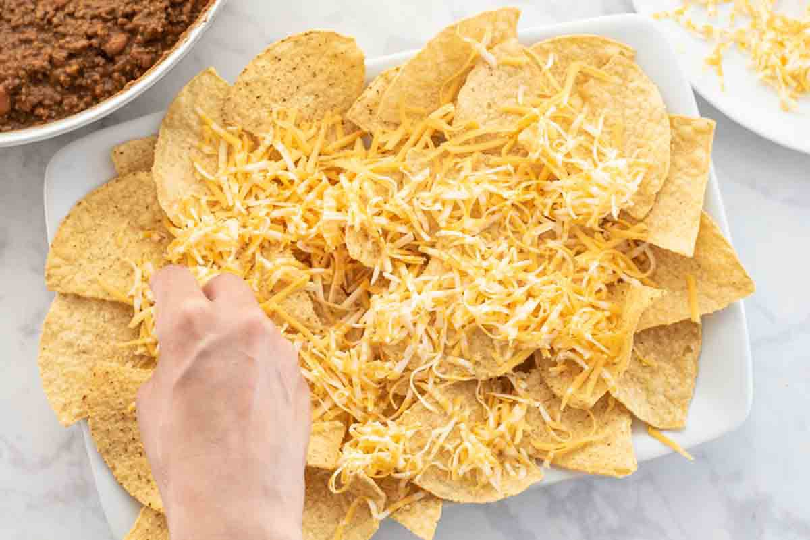

The best place for a cheap and yummy mealCheese Chip Craze

Yummy SnackWorth Eating
While it may not be the healthiest snack on the market, cheese chips, which is essentially my name for homemade nachos, it a quick, easy, and heavily customizable snack or meal!